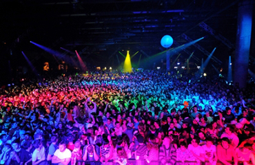

代表作品





王菲，亚洲华语乐坛天后，祖籍哈尔滨，1969年8月8日在北京出生。1987年放弃厦门大学生物系的录取跟随父母移居香港，并拜师戴思聪学习声乐，1989年签约新艺宝唱片公司并发行了第一张个人专辑，从此正式步入乐坛，曾使用艺名王靖雯（对应英文名是Shirley Wong）； 王菲是1990年代初至今现在华语乐坛最优秀女歌手之一，吉尼斯世界纪录保持者。截至2000年3月，20张专辑计算在台湾，日本与香港有据可考的正版总销量达970万张，是华语乐坛粤语专辑销量最高女歌手。王菲自2004、2005年逐渐淡出歌坛，相夫教子，2010年开始复出。
王菲在少年时期曾是中央电视台银河少年艺术团成员之一，王菲祖父王兆民（曾用名王墨林），黑龙江人，在上个世纪40年代后期的中国政坛，曾显赫一时，官至国民政府立法院立法委员。王兆民毕业于北京大学国文系，和同为哈尔滨人的现台湾名人李敖的爸爸是同班同学。
1989年以一首《仍是旧句子》在《亚太金铮流行曲创作大赛》决赛中获铜奖。并于同年推出首张个人大碟《王靖雯》，销量突破3万，获金唱片。
1990在，第二及第三张个人大碟《EVERTHING》，《YOU ARE THE ONLYONE》取得更大突破，夺得"叱咤乐坛流行榜女歌手铜奖"被誉为天王巨星接班人。
1991年，由于唱片公司出现问题，王菲赴美学习。在她离港期间，唱片公司先后推出了精选《SHIRLEY ONCE MORE》及《MORE SHIRLEY》，前者破白金销量。
1992年推出意义重大的第四张专辑《Coming Home》，专辑推出即卖断王菲，销量冲破三白金。
1993年2月5日，发行粤语专辑《执迷不悔》。专辑在香港突破四白金销量。
1993年下半年，推出粤语专辑《十万个为什么？》.改编歌曲《冷战》成为粤语经典。
1993年的两张大碟在香港销量突破8白金40多万张，使王菲获得香港IFPI唱片销量女歌手冠军！在香港叱咤乐坛流行榜上首获女歌手金奖！并首次获得香港十大劲歌金曲国内最受欢迎女歌手！由此正式成为香港新一代天后！
1994年4月，发行首张国语大碟《迷》，第二周登上台湾金曲龙虎榜国语销量榜冠军，并在前十名停留14周。主打歌《我愿意》成为传世经典！
1994年6月，推出粤语专辑《胡思乱想》。王菲大胆将英伦元素融入之中，开创了香港英伦音乐主体风格的新纪元。
1994年11月，发行第二张国语大碟《天空》，唱片推出第二周便登上台湾金曲龙虎榜国语销量榜冠军。在主打歌《天空》中王菲展现了空灵通透的声线，宛如天籁！
1994年12月，发行粤语大碟《讨好自己》整体凸显英伦风格，王菲在专辑中全面展现她特立独行，无拘无束的个性，并首次尝试作曲，创作了《讨好自己.》和《出路》。
1994年是王菲的天后年，在这一年她推出了4张专辑，登顶香港IFPI唱片女歌手销量冠军。横扫香港年度四大颁奖礼，新加坡金曲奖，华语榜中榜等所有大奖，其中蝉联叱咤乐坛流行榜女歌手金奖，在香港十大劲歌金曲颁奖礼中更是创记录的包揽"最受欢迎女歌手"和"亚太最受欢迎女歌手"奖，成为历史第一人，王菲
并成为香港首屈一指的天后。
1995年，发行翻唱专辑《菲靡靡之音》，王菲用自己的风格和全新的编曲去演绎。专辑在台湾金曲龙虎榜国语销售榜前10名停留16周。
1995年12月，推出粤语专辑《Di-Dar》，第二周登上香港IFPI唱片销量榜冠军，并在前十名停留10周，在港累计销量冲破三白金15万张。
1996年5月，发行国语大碟《浮躁》。王菲彻底抛弃商业考虑，《浮躁》是王菲最圆满的艺术尝试。
1996年，王菲录制了《玩具》和《自便》两张EP，新艺宝于1997年发行。
1996年底王菲再次闪耀各大颁奖礼，第三次获得香港叱咤乐坛流行榜女歌手金奖，夺得香港十大劲歌金曲亚太最受欢迎女歌手奖，新加坡金曲奖最受欢迎女歌手及亚太最受欢迎女歌手奖，《天空》获台湾金曲奖最佳音乐录影带奖，成为第一位获得此奖项的香港女歌手。
1997年，6000万天价加盟百代创历史！从1997年到2001年百代时期的5张大碟使王菲扶摇直上，站到了亚洲歌坛的最高峰，由华语第一天后蜕变为亚洲天后！
1997年9月，发行百代时期首张大碟《王菲97》。整体风格慵懒放松，你快王菲《王菲1997》[6]乐所以我快乐成为当年华语歌坛流行语。
1997年9月，旧东家新艺宝推出精选《菲卖品》，专辑发行第二周登上台湾金曲龙虎榜国语销量榜冠军！
1998年，王菲再攀事业巅峰，相约九八爆红。10月8日，推出全新大碟《唱游》王菲《唱游》[7]震撼华人地区。被誉为华语乐坛划时代的专辑！
1999年2月，单曲《Eyes on Me》在日本发卖，并打入日本Oricon销量榜第九位，在日劲销35万，成为当年日本外语唱片销量冠军，夺得"日本金唱片大奖"创造了华语歌手在日本最高排名和销量纪录。
1999年9月，发行国语大碟《只爱陌生人》。陈晓娟首次为王菲创作《推翻》，C.Y. Kong两首摇滚风格浓厚的《百年孤寂》和《开到荼蘼》亦大放异彩，Adrian Chan写了《邮差》（《蝴蝶》），该曲与《当时的月亮》是香港电台双周冠军单曲，而为百事可乐创作的《精彩》则成为香港四台冠军单曲。